1.1. 广义线性模型¶
以下是回归相关的一系列方法，目标值y是输入变量x的线性组合。用数学表达: hat{y} 是预测值
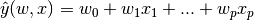
在这个模块中,我们定义向量  为
为 coef_ ,math:w_0 表示为 intercept_
Across the module, we designate the vector 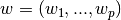 as coef_ and 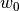 as intercept_.
使用广义线性模型来处理分类问题(classification)请参考 逻辑回归.
1.1.1. 普通最小二乘法¶
LinearRegression 用系数 ：math:w = (w_1,...,w_p) 来拟合一个线性模型,
使得数据集实际观测数据和预测数据（估计值）之间残差平方和最小。数学形式可表达为:
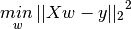
LinearRegression 模型会调用 fit 方法来拟合X,y(X为输入，y为输出).并且会把拟合的线性模型的系数  存储到成员变量
存储到成员变量 coef_ 中
>>> from sklearn import linear_model
>>> clf = linear_model.LinearRegression()
>>> clf.fit ([[0, 0], [1, 1], [2, 2]], [0, 1, 2])
LinearRegression(copy_X=True, fit_intercept=True, n_jobs=1, normalize=False)
>>> clf.coef_
array([ 0.5, 0.5])
然而，对于普通最小二乘问题，其系数估计依赖模型各项相互独立。当各项是相关的，设计矩阵(Design Matrix)  的各列近似线性相关，
那么，设计矩阵会趋向于奇异矩阵，这会导致最小二乘估计对于随机误差非常敏感，会产生很大的方差。这种 多重共线性(multicollinearity)
的情况可能真的会出现，比如未经实验设计收集的数据.
的各列近似线性相关，
那么，设计矩阵会趋向于奇异矩阵，这会导致最小二乘估计对于随机误差非常敏感，会产生很大的方差。这种 多重共线性(multicollinearity)
的情况可能真的会出现，比如未经实验设计收集的数据.
Examples:
1.1.1.1. 普通最小二乘复杂度¶
这种方法通过对矩阵 X 奇异值分解（SVD）的方式来计算最小二乘的解。如果 X 是一个(n, p)大小的矩阵,那么代价为 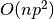,假设 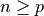.
1.1.2. 岭回归¶
Ridge 岭回归通过对回归稀疏增加罚项来解决 普通最小二乘法 的一些问题.岭回归系数通过最小化带罚项的残差平方和
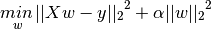
上述公式中, 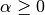 是控制模型复杂度的因子(可看做收缩率的大小) :  越大，收缩率越大，那么系数对于共线性的鲁棒性更强
越大，收缩率越大，那么系数对于共线性的鲁棒性更强
和其他线性模型一样，Ridge 调用 fit 方法，参数为X,y,并且将线性模型拟合的系数 存到成员变量 coef_ 中。:
>>> from sklearn import linear_model
>>> clf = linear_model.Ridge (alpha = .5)
>>> clf.fit ([[0, 0], [0, 0], [1, 1]], [0, .1, 1])
Ridge(alpha=0.5, copy_X=True, fit_intercept=True, max_iter=None,
normalize=False, random_state=None, solver='auto', tol=0.001)
>>> clf.coef_
array([ 0.34545455, 0.34545455])
>>> clf.intercept_
0.13636...
Examples:
1.1.2.2. 设置正则化参数: 广义交叉验证¶
RidgeCV 实现了带缺省 参数的交叉验证的岭回归模型.这个对象和 GridSearchCV 除了它默认为广义交叉验证(GCV),其他工作方式一样。
下面是一种高效的交叉验证方式-留一交叉验证(leave-one-out):
>>> from sklearn import linear_model
>>> clf = linear_model.RidgeCV(alphas=[0.1, 1.0, 10.0])
>>> clf.fit([[0, 0], [0, 0], [1, 1]], [0, .1, 1])
RidgeCV(alphas=[0.1, 1.0, 10.0], cv=None, fit_intercept=True, scoring=None,
normalize=False)
>>> clf.alpha_
0.1
References
- “Notes on Regularized Least Squares”, Rifkin & Lippert (technical report, course slides).
1.1.3. Lasso¶
Lasso 是一种估计稀疏线性模型的方法.由于它倾向具有少量参数值的情况，对于给定解决方案是相关情况下，有效的减少了变量数量。
因此，Lasso及其变种是压缩感知(压缩采样)的基础。在约束条件下，它可以回复一组非零精确的权重系数(参考
Compressive sensing: tomography reconstruction with L1 prior (Lasso)).
用数学形式表达，Lasso 包含一个使用 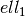 先验作为正则化因子的线性模型。其目标函数是最小化:
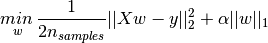
lasso 解决带 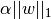 罚项的最小平方和，其中 是一个常量，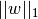 是参数向量的  -norm
-norm
Lasso 类实现使用了坐标下降法(一种非梯度优化算法) 来拟合系数.参考另一种实现 Least Angle Regression最小角回归
>>> from sklearn import linear_model
>>> clf = linear_model.Lasso(alpha = 0.1)
>>> clf.fit([[0, 0], [1, 1]], [0, 1])
Lasso(alpha=0.1, copy_X=True, fit_intercept=True, max_iter=1000,
normalize=False, positive=False, precompute=False, random_state=None,
selection='cyclic', tol=0.0001, warm_start=False)
>>> clf.predict([[1, 1]])
array([ 0.8])
函数 lasso_path 对于lower-level任务非常有用。它能够通过搜索所有可能的路径上的值来计算系数.
Examples:
Note
Feature selection with Lasso
As the Lasso regression yields sparse models, it can thus be used to perform feature selection, as detailed in 基于L1的特征选择(L1-based feature selection).
Note
Randomized sparsity
For feature selection or sparse recovery, it may be interesting to use 随机稀疏模型(Randomized sparse models).
1.1.3.1. 设置正则化参数¶
alpha 参数控制估计的系数的稀疏程度。
1.1.3.1.1. 使用交叉验证¶
scikit-learn 暴露以下两个类 LassoCV 和 LassoLarsCV 可以设置 Lasso alpha 参数.
LassoCV 基于下面解释的算法 Least Angle Regression最小角回归
对于含有很多共线性的高维的数据集，LassoCV 是最合适不过了。然而，LassoLarsCV 在寻找 alpha 参数更相关的值时更具有优势，
并且如果样本相比于观测的数量时，通常比 LassoCV 更快.


1.1.3.1.2. 基于模型选择的信息约束¶
LassoLarsIC 建议使用Akaike information criterion (AIC) 和 Bayes Information criterion (BIC)。
由于在计算:math:alpha 过程中，当使用k-折交叉验证的时候，正则化路径只计算1次而不是k+1次，所以在计算上代价非常小。
然而，这种约束需要一个合适的对于解的自由度的估计（可参考矩阵的解的自由度）,这可以从大量的样本（渐进结果）导出并且
假设模型是正确的。例如，数据实际上是有该模型产生的，但是当问题是病态条件时这种数据可能会有问题(参考病态矩阵，条件数等概念)，比如
特征维数大于样本数.（小样本问题）
1.1.4. 弹性网络¶
ElasticNet 是一种使用L1和L2先验作为正则化矩阵的线性回归模型.这种组合用于只有很少的权重非零的稀疏模型，比如:class:Lasso,
但是又能保持:class:Ridge 的正则化属性.我们可以使用 l1_ratio 参数来调节L1和L2的凸组合(一类特殊的线性组合)。
当多个特征和另一个特征相关的时候弹性网络非常有用。Lasso 倾向于随机选择其中一个，而弹性网络更倾向于选择两个.
在实践中，Lasso 和 Ridge 之间权衡的一个优势是它允许在循环过程（Under rotate）中继承 Ridge 的稳定性.
弹性网络的目标函数是最小化:
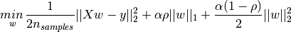

ElasticNetCV 可以通过交叉验证来用来设置参数 alpha () 和 l1_ratio ( )
)
1.1.5. Multi-task Lasso回归¶
MultiTaskLasso 是一种估计多元回归系数的线性模型， y 是一个2D数组，形式为(n_samples,n_tasks).
其限制条件是和其他回归问题一样，是选择的特征，同样称为 tasks.
接下来的图示比较了通过使用一个简单的Lasso或者MultiTaskLasso得到的W中非零的位置。 Lasso 估计量分散着非零值而MultiTaskLasso所有的列全部是非零的。

Fitting a time-series model, imposing that any active feature be active at all times.
数学表达上，它包含了一个使用 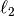 先验作为正则化因子。其目标函数是最小化:
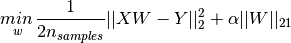
where;
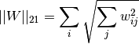
MultiTaskLasso 类的实现使用了坐标下降算法来拟合系数。
1.1.6. Least Angle Regression最小角回归¶
最小角回归是针对高维数据的回归算法，由Bradley Efron, Trevor Hastie, Iain Johnstone and Robert Tibshirani开发。
- LARS的优势如下:
- 当 p >> n 时计算是非常高效的。（比如当维数远大于点数）
- 它和前向选择计算速度差不多一样块，并且和普通最小二乘复杂度一样。
- 它生成一个完整的分段线性的解的路径，这对于交叉验证或者类似的尝试来调整模型是有效的。
- 如果两个变量的相应总是相同，那么它们的系数应该有近似相同的增长速率。因此这算法和直觉判断一样，并且增长总是稳定的。
- 这个算法对于其他评估模型来说很容易被修改来产生解，和Lasso差不多。（待修改）
- It is easily modified to produce solutions for other estimators, like the Lasso.
LARS方法的缺点包括：
- 因为LARS是基于剩余误差多次迭代拟合,所以对噪声的影响比较敏感。这个问题在 Efron et al. (2004) Annals of Statistics article这篇文章中讨论部分详细谈论了。
1.1.7. LARS Lasso¶
LassoLars 是一个使用LARS算法实现的lasso模型。和基于坐标下降的实现不同的是，它产生的是精确的解，和一个函数标准系数一样是精确线性的。
which is piecewise linear as a function of the norm of its coefficients.（待修正）
>>> from sklearn import linear_model
>>> clf = linear_model.LassoLars(alpha=.1)
>>> clf.fit([[0, 0], [1, 1]], [0, 1])
LassoLars(alpha=0.1, copy_X=True, eps=..., fit_intercept=True,
fit_path=True, max_iter=500, normalize=True, positive=False,
precompute='auto', verbose=False)
>>> clf.coef_
array([ 0.717157..., 0. ])
Examples:
The Lars algorithm provides the full path of the coefficients along
the regularization parameter almost for free, thus a common operation
consist of retrieving the path with function lars_path
1.1.7.1. Mathematical formulation¶
这个算法和逐步回归很相似，但是除了在每一步包含变量之外，估计的参数沿着每一个对应的残差的对角方向增长。（待校正）。
并不是给出一个向量结果，而是在LARS的解中包含了一个曲线，用来表示每个参数向量的L1-norm 值的解，
所有系数路径存在 coef_path_ 数组中，大小为(n_features,max_features+1)，其中第一列总是0.
References:
- Original Algorithm is detailed in the paper Least Angle Regression by Hastie et al.
1.1.8. Orthogonal Matching Pursuit (OMP) 正交匹配跟踪¶
OrthogonalMatchingPursuit and orthogonal_mp 实现了一个用来逼近在非零系数的个数上加约束的线性模型的拟合的OMP算法(比如L 0 pseudo-norm)
和 Least Angle Regression最小角回归 一样，作为一个前向特征选择方法，OMP可以用一个固定非零的数来逼近最优的解向量:
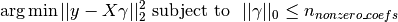
或者说正交匹配算法可以针对一个特殊的误差而不是一个特殊的非零系数的个数，这一过程可以表达为:
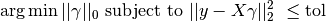
OMP是基于贪婪算法,包括在每一步原子(归一化的向量)与当前残差高度相关。它类似于简单 匹配追踪(MP)方法,但更好的,在每一次迭代中，通过使用的在前一个选择的字典元素的空间的正交投影重新计算残差。 参考 * http://chunqiu.blog.ustc.edu.cn/?p=634 *
Examples:
References:
1.1.9. 贝叶斯回归¶
可以在估计过程中使用贝叶斯回归技术包含正则化参数：正则化参数不是硬编码设置的而是手动调节适合数据的值
可以通过在模型的超参数上引入 uninformative priors
`Ridge Regression`_ 中  使用的正则化项等价于在一个参数为 且精度为 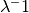 的高斯先验下寻找
一个最大的后验的解。而且并不是手动设置 lambda ，而是有可能把它看做一个随机变量来从从数据中估计。
使用的正则化项等价于在一个参数为 且精度为 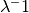 的高斯先验下寻找
一个最大的后验的解。而且并不是手动设置 lambda ，而是有可能把它看做一个随机变量来从从数据中估计。
为了获得一个完整的概率模型，输出  假设为关于 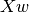 的高斯分布
假设为关于 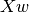 的高斯分布
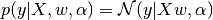
Alpha 同样被看做是随机变量，需要从数据中来估计
贝叶斯回归的优势：
- 根据数据调节参数
- 在估计过程中包含正则化参数
贝叶斯回归劣势:
- 模型的推理比较耗时
References
- 关于贝叶斯方法一个非常好的说明可以参考 C. Bishop: Pattern Recognition and Machine learning (经典的PRML书籍)
- 而原始的算法在 Bayesian learning for neural networks by Radford M. Neal 中有详细描述。
1.1.9.1. 贝叶斯岭回归¶
BayesianRidge 对上述的回归问题估计了一个概率模型。先验参数 由下面的球形高斯给出：
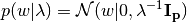
先验参数 和 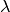 的选择满足 gamma
distributions ，即高斯函数精度的共轭先验
生成的模型称为 Bayesian Ridge Regression ,和经典的 Ridge 类似。
参数 , 以及 在模型的拟合中被共同估计。
其他的参数是 和 的gamma 先验的参数。（待校正）
这些通常被选择为 non-informative*（参考贝叶斯无信息先验）。参数统计通过最大化 *marginal log likelihood.
By default 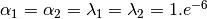.
Bayesian Ridge Regression is used for regression:
>>> from sklearn import linear_model
>>> X = [[0., 0.], [1., 1.], [2., 2.], [3., 3.]]
>>> Y = [0., 1., 2., 3.]
>>> clf = linear_model.BayesianRidge()
>>> clf.fit(X, Y)
BayesianRidge(alpha_1=1e-06, alpha_2=1e-06, compute_score=False, copy_X=True,
fit_intercept=True, lambda_1=1e-06, lambda_2=1e-06, n_iter=300,
normalize=False, tol=0.001, verbose=False)
After being fitted, the model can then be used to predict new values:
>>> clf.predict ([[1, 0.]])
array([ 0.50000013])
The weights of the model can be access:
>>> clf.coef_
array([ 0.49999993, 0.49999993])
由于贝叶斯框架，权重的发现同 普通最小二乘法 略有不同。然而Bayesian Ridge Regression 对于病态问题更具有鲁棒性。
Examples:
References
- More details can be found in the article Bayesian Interpolation by MacKay, David J. C.
1.1.9.2. Automatic Relevance Determination - ARD¶
ARDRegression 和 `Bayesian Ridge Regression`_ 非常相似，但是主要针对稀疏权重 [1] [2] 。
ARDRegression 提出一个不同于 的先验，通过弱化高斯分布为球形的假设。
相反， 的分布假设为一个平行轴的椭圆高斯分布。(同axis-alignen)
也就是说，每个权重  来自于一个中心在0点，精度为
来自于一个中心在0点，精度为  的高斯分布:
的高斯分布:
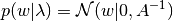
with 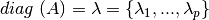.
同 `Bayesian Ridge Regression`_ 形成对比， 每一维都有一个标准差 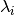 ，
所有 的先验选择 和 由给定超参数 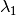 和 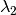 的gamma分布一样。

References:
| [1] | Christopher M. Bishop: Pattern Recognition and Machine Learning, Chapter 7.2.1 |
| [2] | David Wipf and Srikantan Nagarajan: A new view of automatic relevance determination. |
1.1.10. 逻辑回归¶
逻辑回归形如其名，是一个线性分类模型而不是回归模型。逻辑回归在文献中也称为logit回归、最大熵分类(MaxEnt) 或者 log-linear classifier。 在这个模型中，描述单次可能结果输出概率使用 logistic function 来建模。
scikit-learn中逻辑回归的实现为 LogisticRegression 类。它可以拟合含L2或者L1正则化项的多类逻辑回归问题。
作为一个优化问题，二分类L2 通过下方的代价函数来惩罚逻辑回归:
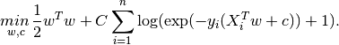
类似的，L1 正则化逻辑回归解决下述的优化问题:
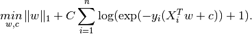
LogisticRegression 中的实现是solver “liblinear” (一个扩展的C++ library,LIBLINEAR), “newton-cg”, “lbfgs” and “sag”。
“lbfgs” 和 “newton-cg” 只支持L2罚项，并且对于一些高维数据收敛非常快。L1罚项产生稀疏预测的权重。
“liblinear” 使用了基于Liblinear的坐标下降法(CD)。对于F1罚项， sklearn.svm.l1_min_c 允许计算C的下界以获得一个非”null” 的
模型（所有特征权重为0）。这依赖于非常棒的一个库 LIBLINEAR library ,用在scikit-learn中。
然而，CD算法在liblinear中的实现无法学习一个真正的多维（多类）的模型。反而，最优问题被分解为 “one-vs-rest” 多个二分类问题来解决多分类。
由于底层是这样实现的，所以使用了该库的 LogisticRegression 类就可以作为多类分类器了。
LogisticRegression 使用 “lbfgs” 或者 “newton-cg” 程序 来设置 multi_class 为 “multinomial”，则该类学习
了一个真正的多类逻辑回归模型，也就是说这种概率估计应该比默认 “one-vs-rest” 设置要更加准确。但是 “lbfgs”, “newton-cg” 和 “sag”
程序无法优化 含L1罚项的模型，所以”multinomial” 的设置无法学习稀疏模型。
“sag” 程序使用了随机平均梯度下降（ Stochastic Average Gradient descent [3]）。它无法解决多分类问题，而且对于含L2罚项的模型有局限性。 然而在超大数据集下计算要比其他程序快很多，当样本数量和特征数量都非常大的时候。
简单概括下，可以按照以下规则来选择solver:
| Case | Solver |
|---|---|
| Small dataset or L1 penalty | “liblinear” |
| Multinomial loss | “lbfgs” or newton-cg” |
| Large dataset | “sag” |
对于超大数据集，你同样可以考虑使用带log损失的 SGDClassifier
Differences from liblinear:
There might be a difference in the scores obtained between
LogisticRegression with solver=liblinear
or LinearSVC and the external liblinear library directly,
when fit_intercept=False and the fit coef_ (or) the data to
be predicted are zeroes. This is because for the sample(s) with
decision_function zero, LogisticRegression and LinearSVC
predict the negative class, while liblinear predicts the positive class.
Note that a model with fit_intercept=False and having many samples with
decision_function zero, is likely to be a underfit, bad model and you are
advised to set fit_intercept=True and increase the intercept_scaling.
Note
Feature selection with sparse logistic regression
A logistic regression with L1 penalty yields sparse models, and can thus be used to perform feature selection, as detailed in 基于L1的特征选择(L1-based feature selection).
LogisticRegressionCV 实现了一个内建的交叉验证来寻找最优的参数C的逻辑回归模型。”newton-cg”,”sag” 和 ”lbfgs” 程序在高维稠密数据上计算更快,原因在于warm-starting.对于多类问题,如果 multi_class 选项设置为 “ovr” ,那么最优的C从每个类别中获得，如果 multi_class 选项设置为 ”multinomial” ,那么最优的Ｃ通过最小化交叉熵损失得到。
References:
| [3] | Mark Schmidt, Nicolas Le Roux, and Francis Bach: Minimizing Finite Sums with the Stochastic Average Gradient. |
1.1.11. Stochastic Gradient Descent - SGD¶
随机梯度下降(SGD)是一种快速拟合线性模型非常有效的方式,尤其当样本数量非常大的时候非常有用。 partial_fit 方法允许 only/out-of-core 学习。
SGDClassifier和SGDRegressor为使用了不同损失函数（凸函数）和不同罚项的分类和回归问题来拟合线性模型的函数。
比如，对于设置参数 loss="log" , SGDClassifier 拟合了一个逻辑回归模型，而设置参数 loss="hinge" ,该类会拟合一个线性SVM
References
1.1.12. 感知机¶
Perceptron是另一种简单的适合大规模学习的算法。默认情况下:
- 它不需要学习率
- 不需要正则化(罚项)
- 只会在判错情况下更新模型。
The Perceptron is another simple algorithm suitable for large scale
learning. By default:
- It does not require a learning rate.
- It is not regularized (penalized).
- It updates its model only on mistakes.
最后一个特性是它比带hinge损失的SGD训练的稍微快点，并且产生的模型是稀疏的。 The last characteristic implies that the Perceptron is slightly faster to train than SGD with the hinge loss and that the resulting models are sparser.
1.1.13. Passive Aggressive Algorithms¶
Passive Aggressive Algorithms 是一些列大规模学习的算法。这些算法和感知机非常相似，并不需要学习率。但是和感知机不同的是，这些算法都包含有一个正则化参数 C 。
The passive-aggressive algorithms are a family of algorithms for large-scale
learning. They are similar to the Perceptron in that they do not require a
learning rate. However, contrary to the Perceptron, they include a
regularization parameter C.
对于分类问题, PassiveAggressiveClassifier 可以通过设置 loss='hinge' (PA-I) 或者 loss='squared_hinge' (PA-II)来处理。
对于回归问题, PassiveAggressiveRegressor 可以通过设置 loss='epsilon_insensitive' (PA-I) 或者 loss='squared_epsilon_insensitive' (PA-II)来处理。
References:
- “Online Passive-Aggressive Algorithms” K. Crammer, O. Dekel, J. Keshat, S. Shalev-Shwartz, Y. Singer - JMLR 7 (2006)
1.1.14. 鲁棒（稳健）回归：异常值和模型错误¶
Robust regression(稳健回归) 主要思路是对异常值十分敏感的经典最小二乘回归目标函数的修改。 它主要用来拟合含异常数据(要么是异常数据,要么是模型错误) 的回归模型。

1.1.14.1. Different scenario and useful concepts¶
下面是在处理由outliers引起的数据异常时需要谨记的几个问题:
Outliers in X or in y?
Outliers in the y direction Outliers in the X direction 

Fraction of outliers versus amplitude of error
The number of outlying points matters, but also how much they are outliers.
Small outliers Large outliers 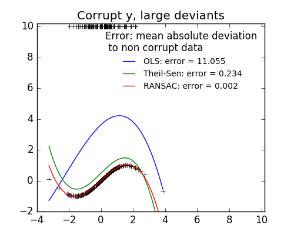
rubust fitting 中一个重要概念是 breakdown point: the fraction of data that can be outlying for the fit to start missing the inlying data.
注意在通常情况下，robust fitting在高维(n_features 非常大)下是难以处理的,robust模型在下列设置下可能无法工作。
1.1.14.2. RANSAC: RANdom SAmple Consensus¶
RANSAC (RANdom SAmple Consensus) 是从完整数据集的随机选择一个子集来拟合模型的方法,该子集被假设为局内点。 RANSAC (RANdom SAmple Consensus) fits a model from random subsets of inliers from the complete data set.
RANSAC 是一个非确定的算法，它仅仅用一个确定的概率来产生一个合理的结果，和迭代的次数无关（参考 max_trials 参数）。 它通常用于线性和非线性回归问题，尤其在摄影计算机视觉领域非常流行。
该算法把一个完整的样本数据集拆分成一系列局内点集合，这些内点可能属于噪声和局外点，比如由测量误差或者无效假设的数据。 最终的模型最终只从确定的局内点中估计出来。 The algorithm splits the complete input sample data into a set of inliers, which may be subject to noise, and outliers, which are e.g. caused by erroneous measurements or invalid hypotheses about the data. The resulting model is then estimated only from the determined inliers.

1.1.14.2.1. Details of the algorithm¶
每一轮迭代过程如下:
- Select
min_samplesrandom samples from the original data and check whether the set of data is valid (seeis_data_valid). - Fit a model to the random subset (
base_estimator.fit) and check whether the estimated model is valid (seeis_model_valid). - Classify all data as inliers or outliers by calculating the residuals
to the estimated model (
base_estimator.predict(X) - y) - all data samples with absolute residuals smaller than theresidual_thresholdare considered as inliers. - Save fitted model as best model if number of inlier samples is maximal. In case the current estimated model has the same number of inliers, it is only considered as the best model if it has better score.
These steps are performed either a maximum number of times (max_trials) or
until one of the special stop criteria are met (see stop_n_inliers and
stop_score). The final model is estimated using all inlier samples (consensus
set) of the previously determined best model.
The is_data_valid and is_model_valid functions allow to identify and reject
degenerate combinations of random sub-samples. If the estimated model is not
needed for identifying degenerate cases, is_data_valid should be used as it
is called prior to fitting the model and thus leading to better computational
performance.
References:
- http://en.wikipedia.org/wiki/RANSAC
- “Random Sample Consensus: A Paradigm for Model Fitting with Applications to Image Analysis and Automated Cartography” Martin A. Fischler and Robert C. Bolles - SRI International (1981)
- “Performance Evaluation of RANSAC Family” Sunglok Choi, Taemin Kim and Wonpil Yu - BMVC (2009)
1.1.14.3. Theil-Sen estimator: generalized-median-based estimator¶
The TheilSenRegressor estimator uses a generalization of the median in
multiple dimensions. It is thus robust to multivariate outliers. Note however
that the robustness of the estimator decreases quickly with the dimensionality
of the problem. It looses its robustness properties and becomes no
better than an ordinary least squares in high dimension.
1.1.14.3.1. Theoretical considerations¶
TheilSenRegressor is comparable to the Ordinary Least Squares
(OLS) in terms of asymptotic efficiency and as an
unbiased estimator. In contrast to OLS, Theil-Sen is a non-parametric
method which means it makes no assumption about the underlying
distribution of the data. Since Theil-Sen is a median-based estimator, it
is more robust against corrupted data aka outliers. In univariate
setting, Theil-Sen has a breakdown point of about 29.3% in case of a
simple linear regression which means that it can tolerate arbitrary
corrupted data of up to 29.3%.
The implementation of TheilSenRegressor in scikit-learn follows a
generalization to a multivariate linear regression model [4] using the
spatial median which is a generalization of the median to multiple
dimensions [5].
In terms of time and space complexity, Theil-Sen scales according to
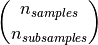
which makes it infeasible to be applied exhaustively to problems with a large number of samples and features. Therefore, the magnitude of a subpopulation can be chosen to limit the time and space complexity by considering only a random subset of all possible combinations.
Examples:
References:
| [4] | Xin Dang, Hanxiang Peng, Xueqin Wang and Heping Zhang: Theil-Sen Estimators in a Multiple Linear Regression Model. |
| [5] |
|
1.1.15. Polynomial regression: extending linear models with basis functions¶
One common pattern within machine learning is to use linear models trained on nonlinear functions of the data. This approach maintains the generally fast performance of linear methods, while allowing them to fit a much wider range of data.
For example, a simple linear regression can be extended by constructing polynomial features from the coefficients. In the standard linear regression case, you might have a model that looks like this for two-dimensional data:
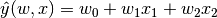
If we want to fit a paraboloid to the data instead of a plane, we can combine the features in second-order polynomials, so that the model looks like this:
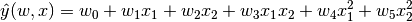
The (sometimes surprising) observation is that this is still a linear model: to see this, imagine creating a new variable
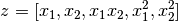
With this re-labeling of the data, our problem can be written
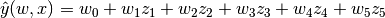
We see that the resulting polynomial regression is in the same class of
linear models we’d considered above (i.e. the model is linear in )
and can be solved by the same techniques. By considering linear fits within
a higher-dimensional space built with these basis functions, the model has the
flexibility to fit a much broader range of data.
Here is an example of applying this idea to one-dimensional data, using polynomial features of varying degrees:

上图使用 PolynomialFeatures 预处理器.这个预处理器将输入数据
转换为一个给定degree的新的数据矩阵。可以用下述方法来做：
This figure is created using the PolynomialFeatures preprocessor.
This preprocessor transforms an input data matrix into a new data matrix
of a given degree. It can be used as follows:
>>> from sklearn.preprocessing import PolynomialFeatures
>>> import numpy as np
>>> X = np.arange(6).reshape(3, 2)
>>> X
array([[0, 1],
[2, 3],
[4, 5]])
>>> poly = PolynomialFeatures(degree=2)
>>> poly.fit_transform(X)
array([[ 1., 0., 1., 0., 0., 1.],
[ 1., 2., 3., 4., 6., 9.],
[ 1., 4., 5., 16., 20., 25.]])
特征向量 X 已经从 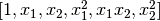 转换为 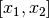 ，
并且可以使用任何线性模型来处理。
这类预处理可以使用 Pipeline 工具来 streamline。表达一个简单的多项式的单一的对象可以通过下列来创建和使用:
This sort of preprocessing can be streamlined with the Pipeline tools. A single object representing a simple polynomial regression can be created and used as follows:
>>> from sklearn.preprocessing import PolynomialFeatures
>>> from sklearn.linear_model import LinearRegression
>>> from sklearn.pipeline import Pipeline
>>> import numpy as np
>>> model = Pipeline([('poly', PolynomialFeatures(degree=3)),
... ('linear', LinearRegression(fit_intercept=False))])
>>> # fit to an order-3 polynomial data
>>> x = np.arange(5)
>>> y = 3 - 2 * x + x ** 2 - x ** 3
>>> model = model.fit(x[:, np.newaxis], y)
>>> model.named_steps['linear'].coef_
array([ 3., -2., 1., -1.])
在多项式特征上训练的模型可以精确地恢复输入的多项式系数。 The linear model trained on polynomial features is able to exactly recover the input polynomial coefficients.
In some cases it’s not necessary to include higher powers of any single feature,
but only the so-called interaction features
that multiply together at most  distinct features.
These can be gotten from
distinct features.
These can be gotten from PolynomialFeatures with the setting
interaction_only=True.
比如，在处理布尔型特征的时候，  对于所有的
对于所有的  是没有作用的。
但是 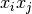 表现了两个布尔值的联系.通过这种方式，我们就可以使用线性分类器解决XOR问题(异或问题)
For example, when dealing with boolean features,
for all and is therefore useless;
but represents the conjunction of two booleans.
This way, we can solve the XOR problem with a linear classifier:
是没有作用的。
但是 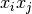 表现了两个布尔值的联系.通过这种方式，我们就可以使用线性分类器解决XOR问题(异或问题)
For example, when dealing with boolean features,
for all and is therefore useless;
but represents the conjunction of two booleans.
This way, we can solve the XOR problem with a linear classifier:
>>> from sklearn.linear_model import Perceptron
>>> from sklearn.preprocessing import PolynomialFeatures
>>> import numpy as np
>>> X = np.array([[0, 0], [0, 1], [1, 0], [1, 1]])
>>> y = X[:, 0] ^ X[:, 1]
>>> X = PolynomialFeatures(interaction_only=True).fit_transform(X)
>>> X
array([[ 1., 0., 0., 0.],
[ 1., 0., 1., 0.],
[ 1., 1., 0., 0.],
[ 1., 1., 1., 1.]])
>>> clf = Perceptron(fit_intercept=False, n_iter=10, shuffle=False).fit(X, y)
>>> clf.score(X, y)
1.0